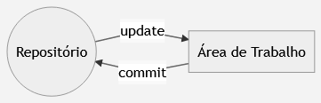
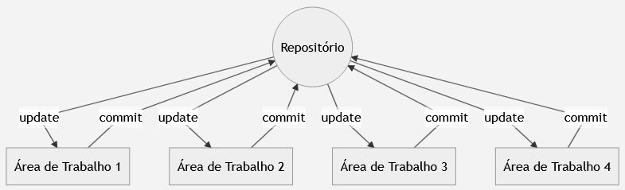
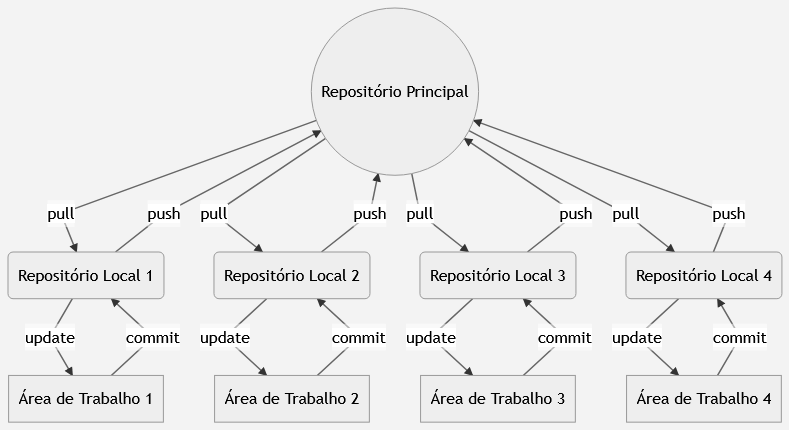

O que é um VCS?
Um Version Control System (VCS) é um software de gerenciamento das alterações feitas em arquivos. Ele possibilita que as alterações feitas possam ser comparadas, restauradas e mescladas.
Benefícios de um VCS
Um VCS é uma ferramenta fundamental para o desenvolvimento de softwares. Seus principais benefícios são:
- Registro histórico: Toda a evolução do projeto, cada alteração sobre cada arquivo é guardada. Por conta disso, é possível identificar o autor, o dia e qual alteração foi feita.
- Colaboração concorrente: Possibilita que vários desenvolvedores trabalhem em paralelo sobre os mesmos arquivos sem que um sobrescreva o código de outro.
- Variações no Projeto: Mantém linhas diferentes de evolução do mesmo projeto. Por exemplo, mantendo uma versão 1.0 enquanto a equipe prepara uma versão 2.0.
Funcionamento de um VCS
Um VCS é composto de duas partes, são elas:
- Repositório: Armazena todo o histórico de evolução do projeto, registrando toda e qualquer alteração feita em cada arquivo .
- Área de trabalho: Armazena uma cópia dos arquivos presentes no repositório. Essas cópias podem ser modificadas pelo programador de acordo com sua vontade — qualquer alteração feita nos aquisitivos é monitorada, dessa forma é possível identificar todas mudanças feitas.
Na prática, acontece o seguinte:

As alterações feitas na área de trabalho podem ser enviadas para o repositório sempre que o desenvolvedor quiser — essa ação é conhecida como commit. Em contra partida, caso o desenvolvedor queira ter acesso aos arquivos contidos no repositório, basta atualizar sua área de trabalho — ação conhecida como update.
Tipos de VCS
Atualmente, os sistemas de controle de versão são classificados em dois tipos, são eles:
- Centralized Version Control System(CVCS): Trabalha com um servidor, que funciona como repositório central único, e áreas de trabalho que são utilizadas nas máquinas dos desenvolvedores. As áreas de trabalho se comunicam apenas através do repositório central, por meio de commit e update. Abaixo segue uma representação de um CVCS:

Distributed Version Control System(DVCS): Cada área de trabalho tem seu repositórios individuais, ou seja, as operações de commit e update são feitas nas máquinas dos desenvolvedores. Porém, existe um servidor remoto que funciona como repositório oficial e permite a comunicação entre os repositórios individuais — o envio de arquivos do repositório local para o oficial é chamado de push, já o caminho inverso é chamado de pull. Abaixo segue uma representação de um DVCS:

Os CVCS's atende a maioria das equipes de desenvolvimento. Contudo, caso a quantidade de interações feitas entre as áreas de trabalho e o repositório seja maior que a suportada pelo servidor o mesmo pode ser sobrecarregado e o trabalho da equipe ser prejudicado.
Por outro lado, os DVCS's não sofrem desse problema — o uso de repositórios individuais acaba poupando o repositório oficial. Entretanto, é necessário um maior conhecimento da ferramenta por parte do desenvolvedor.